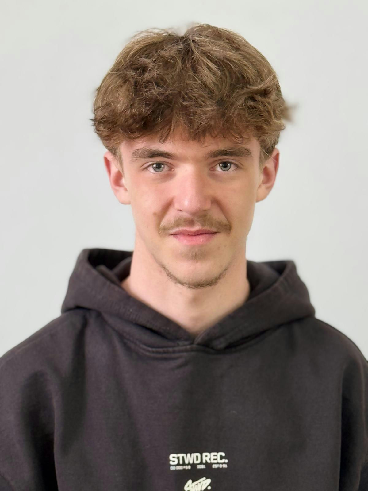

Marcos
Ribeiro.
Information Systems Programming student
From circuits to code. From the starting grid to the next big idea. I build things, chase challenges, and keep learning.

++FIG. 01 / MARCOSA journey in the making.
The work, the learning, and the moments in between. Follow the line. There’s a story at every stop.
Ideas made real.
Real businesses. Real hardware. Projects that took me from “what if” to “it works”.
My everyday toolkit.
A growing collection of tools, with curiosity as the common thread.
A little adrenaline.
A lot of curiosity.
Off-screen, you’ll find me on a downhill trail or at the karting track. Music and games fill the quieter moments. Different worlds, the same drive to get better.
Let’s build
something good.
Have an internship opportunity or a website in mind? I’d love to hear about it.
marcospribeiro57@gmail.com ↗
Internship from February 2027 · 540 hours
Freelance web
development
Viseu & Aveiro districts, Portugal
On-site, hybrid or
remote